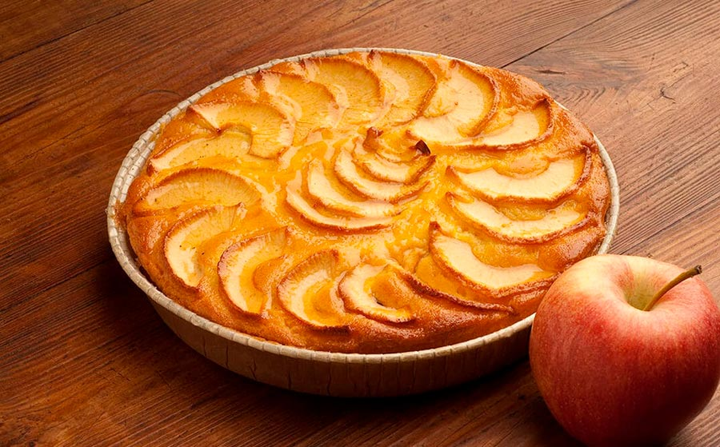

Receta de Tarta de Manzana
Una deliciosa receta de tarta de manzana casera, ideal para cualquier ocasión.

Ingredientes
- 3 manzanas
- 150g de azúcar
- 100g de mantequilla
- 200g de harina
- 1 cucharadita de canela
- 2 huevos
- 100ml de leche
- 1 cucharadita de polvo de hornear
Paso a paso
- Pelar y cortar las manzanas en rodajas finas.
- Batir los huevos con el azúcar hasta obtener una mezcla espumosa.
- Añadir la mantequilla derretida y la leche, y mezclar bien.
- Incorporar la harina tamizada con el polvo de hornear y la canela.
- Verter la mezcla en un molde previamente engrasado.
- Colocar las rodajas de manzana sobre la mezcla y espolvorear con un poco de azúcar y canela.
- Hornear a 180°C durante 40-45 minutos o hasta que esté dorada.
Aporte Nutricional
| Nutriente |
Cantidad por porción (100g) |
| Calorías |
250 kcal |
| Proteínas |
4g |
| Grasas |
12g |
| Carbohidratos |
30g |
| Fibra |
2g |